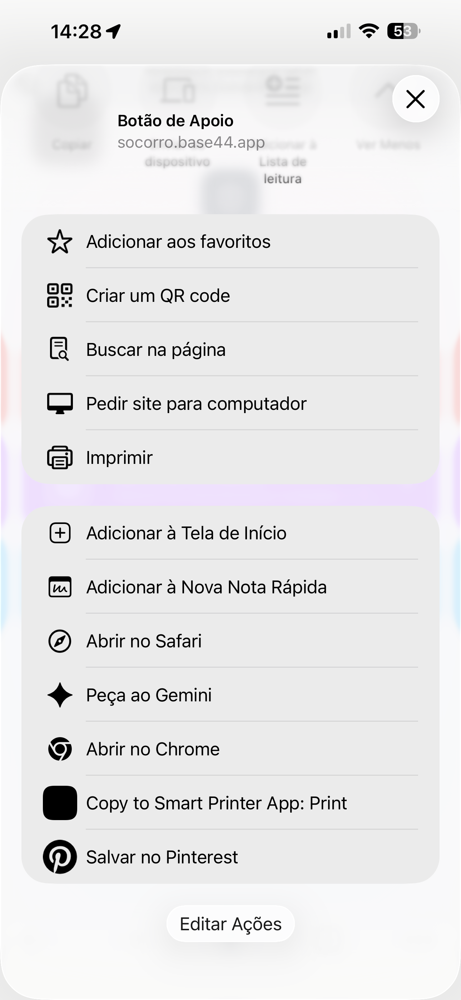

<template>
  <script src="../../assets/vendor/gsap.min.js"></script>
  <style>
    @font-face{font-family:"Space Grotesk";font-weight:400;font-style:normal;font-display:block;src:url("../../assets/fonts/space-grotesk-latin-400-normal.woff2") format("woff2");}
@font-face{font-family:"Space Grotesk";font-weight:500;font-style:normal;font-display:block;src:url("../../assets/fonts/space-grotesk-latin-500-normal.woff2") format("woff2");}
@font-face{font-family:"Space Grotesk";font-weight:600;font-style:normal;font-display:block;src:url("../../assets/fonts/space-grotesk-latin-600-normal.woff2") format("woff2");}
@font-face{font-family:"Space Grotesk";font-weight:700;font-style:normal;font-display:block;src:url("../../assets/fonts/space-grotesk-latin-700-normal.woff2") format("woff2");}
@font-face{font-family:"Inter";font-weight:400;font-style:normal;font-display:block;src:url("../../assets/fonts/inter-latin-400-normal.woff2") format("woff2");}
@font-face{font-family:"Inter";font-weight:500;font-style:normal;font-display:block;src:url("../../assets/fonts/inter-latin-500-normal.woff2") format("woff2");}
@font-face{font-family:"Inter";font-weight:600;font-style:normal;font-display:block;src:url("../../assets/fonts/inter-latin-600-normal.woff2") format("woff2");}
@font-face{font-family:"Inter";font-weight:700;font-style:normal;font-display:block;src:url("../../assets/fonts/inter-latin-700-normal.woff2") format("woff2");}


    #root {
      position: absolute;
      inset: 0;
      width: 1080px;
      height: 1920px;
      overflow: hidden;
      font-family: "Inter", sans-serif;
      color: #111111;
    }

    #f03-bg {
      position: absolute;
      inset: 0;
      background: #fdfae7;
    }

    /* ---------- text block (upper ~22%) ---------- */
    #f03-head {
      position: absolute;
      left: 72px;
      right: 72px;
      top: 96px;
    }
    .f03-steprow {
      display: flex;
      align-items: center;
      gap: 28px;
      height: 124px;
    }
    #f03-num {
      font-family: "Space Grotesk", sans-serif;
      font-weight: 700;
      font-size: 132px;
      line-height: 1;
      color: #1e2bfa;
      letter-spacing: -0.02em;
    }
    #f03-pill {
      font-family: "Space Grotesk", sans-serif;
      font-weight: 600;
      font-size: 34px;
      letter-spacing: 0.04em;
      color: #1e2bfa;
      background: rgba(30, 43, 250, 0.08);
      border: 1.5px solid rgba(30, 43, 250, 0.2);
      border-radius: 100px;
      padding: 12px 34px;
    }
    #f03-headline {
      margin-top: 22px;
      font-family: "Space Grotesk", sans-serif;
      font-weight: 600;
      font-size: 62px;
      line-height: 1.1;
      letter-spacing: -0.02em;
      color: #111111;
      max-width: 936px;
    }
    .f03-word {
      display: inline-block;
      margin-right: 0.24em;
    }
    #f03-helper {
      margin-top: 18px;
      font-family: "Inter", sans-serif;
      font-weight: 500;
      font-size: 34px;
      line-height: 1.3;
      color: #6b6b6b;
    }

    /* ---------- phone (centered, ~59% of canvas height, bottom <= 1600) ---------- */
    #f03-phone {
      position: absolute;
      left: 272px;
      top: 470px;
      width: 536px;
      height: 1130px;
      border-radius: 70px;
      background: #111111;
    }
    #f03-screen {
      position: absolute;
      left: 14px;
      top: 14px;
      width: 508px;
      height: 1102px;
      border-radius: 56px;
      overflow: hidden;
      background: #f2f2f2;
    }
    .f03-shot {
      position: absolute;
      left: 0;
      top: 0;
      width: 508px;
      height: 1102px;
      object-fit: fill;
      display: block;
    }
    /* depth-of-field layer: blurred, darkened copy with the row cut out */
    #f03-dof {
      position: absolute;
      left: 0;
      top: 0;
      width: 508px;
      height: 1102px;
      clip-path: path(evenodd, "M0 0 H508 V1102 H0 Z M18 551 H490 V622 H18 Z");
      backdrop-filter: blur(4px);
      -webkit-backdrop-filter: blur(4px);
    }
    #f03-dof-tint {
      position: absolute;
      inset: 0;
      background: rgba(17, 17, 17, 0.55);
    }
    #f03-ring {
      position: absolute;
      left: 0;
      top: 0;
      width: 508px;
      height: 1102px;
      overflow: visible;
    }
    #f03-tap {
      position: absolute;
      left: 118px;
      top: 554px;
      width: 66px;
      height: 66px;
      border-radius: 50%;
      background: rgba(30, 43, 250, 0.55);
      border: 3px solid #fdfae7;
    }
    #f03-ripple {
      position: absolute;
      left: 118px;
      top: 554px;
      width: 66px;
      height: 66px;
      border-radius: 50%;
      border: 4px solid #1e2bfa;
    }
  </style>

  <div
    id="root"
    data-composition-id="03-iphone-adicionar-tela"
    data-width="1080"
    data-height="1920"
    data-duration="5.5"
  >
    <div id="f03-bg" class="clip" data-start="0" data-duration="5.5" data-track-index="0"></div>

    <div id="f03-head">
      <div class="f03-steprow">
        <div id="f03-num">2</div>
        <div id="f03-pill">iPhone</div>
      </div>
      <div id="f03-headline">
        <span class="f03-word">Toque</span><span class="f03-word">em</span><span class="f03-word">Adicionar</span><span class="f03-word">à</span><span class="f03-word">Tela</span><span class="f03-word">de</span><span class="f03-word">Início</span>
      </div>
      <div id="f03-helper">Se não aparecer, role o menu para baixo.</div>
    </div>

    <div id="f03-phone">
      <div id="f03-screen">
        
        <div id="f03-dof">
          <div id="f03-dof-tint"></div>
        </div>
        <svg id="f03-ring" viewBox="0 0 508 1102" width="508" height="1102">
          <rect
            id="f03-ring-rect"
            x="14"
            y="547"
            width="480"
            height="79"
            rx="18"
            ry="18"
            fill="none"
            stroke="#1e2bfa"
            stroke-width="6"
            pathLength="1"
            stroke-dasharray="1"
            stroke-dashoffset="1"
          />
        </svg>
        <div id="f03-ripple"></div>
        <div id="f03-tap"></div>
      </div>
    </div>
  </div>

  <script>
    (function () {
      const tl = gsap.timeline({ paused: true });
      const words = document.querySelectorAll("#root .f03-word");

      // Scene 1 (0.0-1.0s): step number + pill, per-word headline reveal
      tl.fromTo("#f03-num", { opacity: 0, y: 40 }, { opacity: 1, y: 0, duration: 0.5, ease: "power3.out" }, 0);
      tl.fromTo("#f03-pill", { opacity: 0, x: -24 }, { opacity: 1, x: 0, duration: 0.5, ease: "power3.out" }, 0.1);
      tl.fromTo(
        words,
        { opacity: 0, y: 36 },
        { opacity: 1, y: 0, duration: 0.45, ease: "power3.out", stagger: 0.07 },
        0.2
      );

      // Phone shell holds the previous step's position (continuity), visible early
      tl.fromTo("#f03-phone", { opacity: 0 }, { opacity: 1, duration: 0.4, ease: "power2.out" }, 0.1);

      // Scene 2 (1.0-2.0s): scale-swap the screenshot into the screen
      tl.fromTo(
        "#f03-img",
        { opacity: 0, scale: 1.08, transformOrigin: "50% 50%" },
        { opacity: 1, scale: 1, duration: 0.8, ease: "power3.out" },
        1.0
      );
      tl.fromTo(
        "#f03-phone",
        { scale: 0.96, transformOrigin: "50% 50%" },
        { scale: 1, duration: 0.8, ease: "power3.out" },
        1.0
      );

      // Scene 3 (2.0-3.4s): depth-of-field dims everything but the row; ring draws
      tl.fromTo("#f03-dof", { opacity: 0 }, { opacity: 1, duration: 0.7, ease: "power2.inOut" }, 2.0);
      tl.fromTo(
        "#f03-ring-rect",
        { attr: { "stroke-dashoffset": 1 } },
        { attr: { "stroke-dashoffset": 0 }, duration: 0.9, ease: "power2.inOut" },
        2.4
      );

      // Scene 4 (3.4-4.0s): tap dot presses the row
      tl.fromTo(
        "#f03-tap",
        { opacity: 0, scale: 1.6 },
        { opacity: 1, scale: 1, duration: 0.22, ease: "power3.out" },
        3.4
      );
      tl.to("#f03-tap", { scale: 0.78, duration: 0.12, ease: "power2.in" }, 3.64);
      tl.to("#f03-tap", { scale: 1, duration: 0.24, ease: "power3.out" }, 3.76);
      tl.fromTo(
        "#f03-ripple",
        { opacity: 0.9, scale: 1 },
        { opacity: 0, scale: 2.4, duration: 0.5, ease: "power2.out" },
        3.72
      );
      tl.to("#f03-ring-rect", { attr: { "stroke-width": 9 }, duration: 0.12, ease: "power2.out" }, 3.72);
      tl.to("#f03-ring-rect", { attr: { "stroke-width": 6 }, duration: 0.3, ease: "power2.out" }, 3.84);

      // Scene 5 (4.0-5.0s): hold; helper line arrives
      tl.fromTo("#f03-helper", { opacity: 0, y: 20 }, { opacity: 1, y: 0, duration: 0.5, ease: "power3.out" }, 4.0);

      tl.set({}, {}, 5);
      window.__timelines["03-iphone-adicionar-tela"] = tl;
    })();
  </script>
</template>
